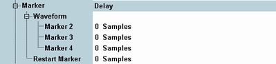

The marker settings define delay times for the output trigger events relative to the waveform and restart marker events. Delays are typically used to compensate for propagation times in the test setup.
The trigger signals can be used to control internal measurements or external devices, see "ARB Marker Signals".

Delay of the "GPRF Gen1: Waveform Marker 2" ... trigger signals relative to the rising edge of the "Marker 2", "Marker 3" ... signals in the waveform file. The total number N of samples in the waveform file is displayed in the ARB section. A delay of n samples delays the marker by n/N processing periods.
Remote command:Analogous to "Marker 1" ..., but related to the restart marker. This marker is not stored in the waveform file but generated by the ARB generator when the file is processed. It represents a single pulse with its rising edge at the start time of the waveform file. See also "Restart markers and user-defined markers in multi-segment mode".
Remote command: